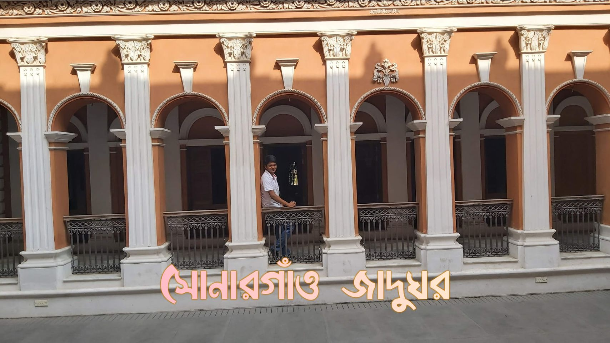

Sonargaon Narayanganj
By Mahmud Ebne Zaman Sonargaon is one of the old capitals of the historic region of Bengal and was an administrative center of eastern Bengal. It was also a river port. It's hinterland was the center of the muslin trade in Bengal, with a large population of weavers and artisans. According to ancient Greek and Roman accounts, an emporium was located in this hinterland, which archaeologists have identified with the Wari-Bateshwar ruins. The area was a base for the Vanga, Samatata, Sena, and Deva dynasties.